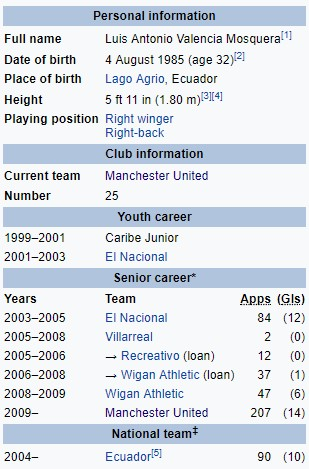

Aнтонио Валенсија
Антонио Валенсија је еквадорски професионални фудбалер који игра као право крило и десни бек за Манчестер Јунајтед и еквадорску репрезентацију. После прогреса кроз омладински систем у Ел Националу, Валенсија је постало редован првотимац и направио преко 80 наступа за клуб. Освојио је Еквадорску Серију А са њима пре него што је потписао за шпански Виљареал у 2005. Уписао је само два лигашка наступа за шпанску страну измедју зајма у Рекреативу за сезону 2005-06, а касније и Виган Атлетика од 2006. до 2008. године. Виган Атлетик је касније купио Валенсију на трогодишњи уговор за неоткривену плату у јануару 2008. године. Његове игре за Виган Атлетик су ускоро привукле пажњу неколико клубова високог профила, али је на крају потписао за Манчестер Јунајтед у јуну 2009. Валенсија је од тада освојио две Премијер лиге, ФА куп, два лига купа, Лига УЕФА Европа Лигу и три ФА Кумјунити шилда. Валенсија је проглашен за ПФА Тим године у својој првој сезони са клубом. Валенсија је дебитовао у Еквадору 2004. године и представља своју земљу на Светском првенству у фудбалу 2006, Копа Америка 2007, Копа Америка 2011, ФИФА Светски Куп 2014 и Копа Америка. Од свог дебитовања, Валенсија је наступио преко 80 пута и постигла десет голова за своју земљу.
